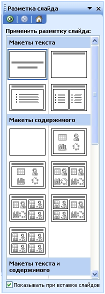
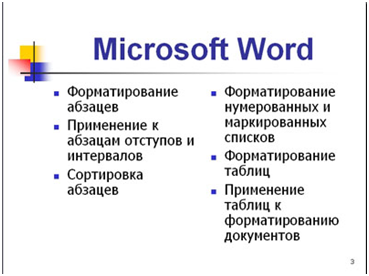
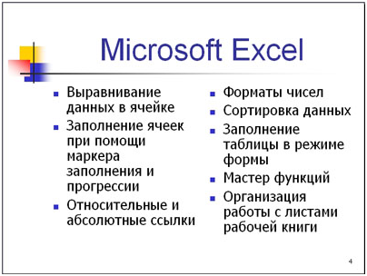
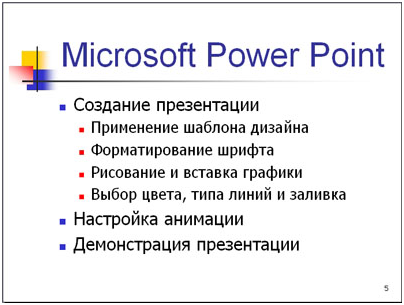
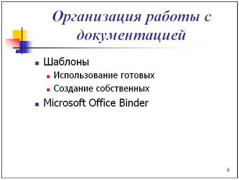
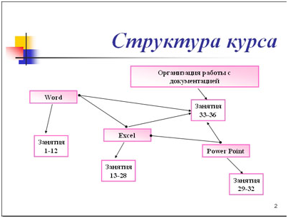

ПРАКТИЧЕСКАЯ РАБОТА №19-20
Тема: Работа со слайдами. Оформление и проведение презентаций средствами MS PowerPoint.
Цель: Освоить основные приемы работы с презентациями, общие операции со слайдами в MS PowerPoint.
Технология выполнения работы
Упражнение: Разработка презентации. Применение шаблонов дизайна.
В качестве темы первой презентации возьмем электронную иллюстрацию выступления, касающегося структуры построения курса лекций по изучению Microsoft Office.
Этот процесс подготовки презентации придется разбить на два этапа:
Разработка презентации
Для начала нужно сформулировать тему будущей презентации, хотя бы ориентировочно определить количество слайдов и их структуру. Продумать варианты оформления слайдов.
Подготовим шесть слайдов. На первом отразим название курса и его продолжительность (титульный лист презентации).
На втором — графически отобразим структуру курса. На остальных — содержание занятий, соответственно по темам:
Создание презентации
Слайд № 1
Запустите PowerPoint 2003. Пуск-Программы-PowerPoint 2003. Перед вами появится окно PowerPoint 2003.
В группе полей выбора Создать новую презентацию выберите Новая презентация.
Следующим шагом окажется появление окна Разметка слайда, на котором представлены различные варианты разметки слайдов (рисунок 1). Выберите самый первый тип — Титульный слайд.

Наконец-то перед вами появится первый слайд с разметкой для ввода текста (метками-заполнителями).
Метки-заполнители — это рамки с пунктирным контуром, появляющиеся при создании нового слайда. Эти рамки служат метками-заполнителями для таких объектов, как заголовок слайда, текст, диаграммы, таблицы, организационные диаграммы и графика. Чтобы добавить текст в метку-заполнитель, достаточно щелкнуть мышью, а чтобы добавить заданный объект, щелкнуть дважды. Однако белый фон не производит впечатления.
Начните свою работу с выбора цветового оформления слайда. PowerPoint 2003 предоставляет возможность воспользоваться шаблонами дизайна которые позволяют создавать презентации в определенном стиле.
Шаблон дизайна содержит цветовые схемы, образцы слайдов и заголовков с настраиваемыми форматами и стилизованные шрифты. После применения шаблона дизайна каждый вновь добавляемый слайд оформляется в едином стиле.
В меню Формат выберите команду Применить шаблон дизайна (Оформление слайда) ... и дальше вас ждет очень приятный процесс - «просматривай и выбирай».
Когда разметка выбрана, остается ввести с клавиатуры текст заголовка и подзаголовка. Для этого достаточно щелкнуть мышью по метке-заполнителю, и ввести текст, который автоматически будет оформлен в соответствии с установками выбранного шаблона дизайна.
Первый слайд готов.
Слайд № 2
Самый сложный по изготовлению и насыщенный слайд. К его подготовке мы приступим в самую последнюю очередь. Сразу же после разработки первого слайда, приступим к третьему.
Слайд № 3
Для того чтобы вставить новый слайд, выполните команду Вставка–Создать слайд... Появляется уже знакомое окно Создать слайд. Выберите разметку слайда Заголовок и текст в две колонки.

Слайд № 4
Разрабатывается точно так же, как предыдущий слайд. Выполните эту работу самостоятельно.

Слайд № 5
Основным отличием от двух предыдущих слайдов является то, что в окне Создать слайд нужно выбрать разметку Заголовок и текст.
Однако в этом варианте применен иерархический (или многоуровневый) список (два уровня абзацев - различные маркеры и отступы).
Для того чтобы "понизить" или "повысить" уровень абзаца примените кнопки панели инструментов. Можете сначала набрать весь текст в один уровень (обычный маркированный список), а затем выделить абзацы следующего уровня и нажать соответствующую кнопку панели инструментов. Маркер автоматически будет изменен при переводе абзаца на новый уровень.
Работая с маркированными списками, будьте особенно внимательны при выделении элементов списка. От этого во многом зависит и результат.
Так как в зависимости от длины строк вводимого текста у вас есть вероятность получить как "широкий", так и "узкий" список, после набора может возникнуть необходимость переместить список целиком, чтобы зрительно он располагался по центру слайда.

Слайд №6
Выполняется точно так же, как и предыдущий слайд.

Слайд № 2
Теперь приступим к разработке второго слайда - самого сложного по выполнению и самого эффектного.
Если панель Рисование отсутствует на экране, активизировать ее можно, выполнив команду Вид-Панели инструментов. На экране появится диалоговое окно Панели инструментов. В списке панелей инструментов активизируйте переключатель Рисование.
Панель Рисование можно перемещать по экрану мышью, чтобы она не загораживала ту часть слайда, с которой вы собираетесь работать.

Итак, панель Рисование активна, выберите на ней инструмент Надпись. Указатель мыши принял форму текстового курсора, установите его в нужное место и введите название первого раздела, например, WORD. Вокруг текста возникает рамка (метка-заполнитель) (аналогично той ситуации, когда пользовались инструментом Рамка текста в редакторе Word).
Далее воспользуемся графическими возможностями оформления текста.
Заголовок первого раздела готов. Три оставшихся оформлены таким же образом. Удобнее всего растиражировать имеющийся (переместить мышью с нажатой клавишей Ctrl, затем в новый заголовок установить текстовый курсор и изменить текст WORD на EXCEL и т.д. Таким образом, за короткий промежуток времени можно подготовить заголовки всех разделов.
Перечень занятий подготовлен с применением тех же приемов, только выбрано более простое оформление (отсутствует заливка, выбран только цвет линии). Выполните самостоятельно. Для того чтобы текст внутри рамки располагался в две строки, набирайте его в два абзаца (после первой строки воспользуйтесь клавишей Enter) или в две строки (Shift+Enter).